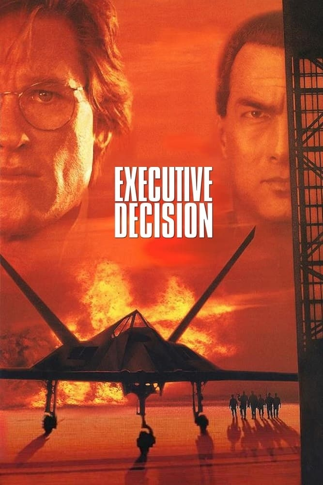
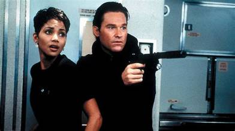
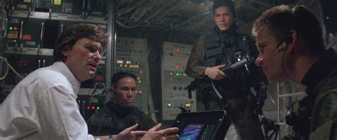

Celui-là, je pensais savoir ce que j'allais regarder.
La jaquette annonçait Steven Seagal. Je m'attendais au Seagal habituel — flegmatique, invincible, réglant tout en deux mouvements secs. J'ai lancé la cassette avec cette idée bien installée dans la tête.
Et puis Seagal meurt. Dans les toutes premières minutes du film.
Je me souviens de ma surprise, presque de l'incompréhension — comment un film pouvait-il tuer sa tête d'affiche annoncée aussi vite ? Et c'est là que Kurt Russell prend le relais, sans prévenir, pour porter tout le reste du récit.
J'étais venu pour un acteur, j'en ai eu un autre. Et contre toute attente, j'ai été agréablement surpris.
Ce soir, dernière étape du fil Kurt Russell de cette saison.

Executive Decision — affiche, 1996
Executive Decision.
1996. Réalisé par Stuart Baird. Avec Kurt Russell, Steven Seagal et Halle Berry.
Produit par Warner Bros, le film s'inscrit dans la lignée des thrillers d'action en huis clos aérien popularisés par Passager 57 quatre ans plus tôt — mais avec une ambition nettement supérieure : un Boeing 747 détourné par des terroristes, une bombe chimique à bord, et une opération militaire secrète pour reprendre le contrôle de l'appareil en plein vol.
Le casting annonce Steven Seagal en tête d'affiche. Le film en décide autrement dès les premières minutes, laissant Kurt Russell porter seul l'essentiel du récit face à la menace.
Halle Berry, alors en pleine ascension, incarne une hôtesse de l'air prise dans l'engrenage.
Executive Decision ne se contente pas de reproduire la formule Die Hard-dans-un-avion.
Il la complexifie, l'étire, et prend le temps de faire durer la tension.
1996.
Quatre ans après Passager 57, le sous-genre du thriller aérien a fait ses preuves commerciales, et Warner Bros voit dans Executive Decision l'occasion de proposer une version plus ambitieuse, plus longue, plus techniquement sophistiquée du concept. Le scénario, signé Jim Thomas et John Thomas — déjà auteurs de Predator — mise sur une menace terroriste crédible et un dispositif militaire élaboré plutôt que sur le pur spectacle d'action.
Stuart Baird, monteur reconnu ayant travaillé sur plusieurs films de la saga James Bond et Lethal Weapon avant de passer à la réalisation, apporte un sens du rythme particulier, construit sur la tension et l'attente plutôt que sur l'accumulation de scènes spectaculaires.
Le choix de casting s'avère le plus commenté du film. Steven Seagal, alors star reconnue du genre, est engagé en tête d'affiche — une décision marketing qui explique la place de son nom sur l'affiche. Mais le scénario prévoit dès l'origine la mort précoce de son personnage, un twist rare pour l'époque qui bouleverse les attentes du public en pleine projection.
Kurt Russell, qui vient de tourner Breakdown la même année, se retrouve à porter l'essentiel du film — un rôle d'analyste militaire plus posé que ses personnages d'action habituels, où l'intelligence tactique prime sur la confrontation physique directe.
Halle Berry, dont la carrière est alors en plein essor après Boomerang et Jungle Fever, apporte une présence marquante dans un rôle qui dépasse le simple archétype de l'hôtesse de l'air en détresse.
Le tournage nécessite la construction d'un intérieur d'avion grandeur nature, permettant à l'équipe de filmer les séquences d'infiltration et de combat dans un espace aussi exigu que crédible.
Sorti à l'hiver 1996, le film s'impose comme un succès commercial solide, porté notamment par le bouche-à-oreille autour de son twist initial.

Kurt Russell et Halle Berry — Executive Decision, 1996
Un vol commercial reliant l'Europe aux États-Unis est détourné par un groupe terroriste, qui prend le contrôle du Boeing 747 avec l'intention de l'utiliser comme vecteur d'une attaque chimique dévastatrice contre le sol américain.
Alertée de la menace, une équipe militaire d'élite, accompagnée d'un analyste du renseignement, échafaude un plan aussi audacieux que risqué : s'arrimer en plein vol à l'avion détourné à l'aide d'un appareil expérimental, pour infiltrer discrètement la soute sans que les terroristes ne s'en aperçoivent.
L'opération, censée être menée par des spécialistes aguerris, tourne rapidement au chaos dès les premières minutes — forçant l'équipe restante à improviser dans des conditions bien plus périlleuses que prévu.
À l'intérieur de l'avion, coincés parmi les passagers, les militaires infiltrés doivent progresser sans éveiller les soupçons, localiser la bombe, neutraliser les terroristes un par un, et empêcher l'avion d'atteindre sa destination fatale.
Le tout, avec un temps qui s'écoule inexorablement, et aucune marge d'erreur possible.
Executive Decision se distingue par un choix narratif rare pour un blockbuster d'action des années 90 — désamorcer délibérément les attentes du public dès l'ouverture.
La mort précoce du personnage de Steven Seagal ne relève pas du simple twist marketing. Elle repositionne immédiatement le film : ici, aucun héros solitaire invincible ne va sauver la situation à coups de répliques assassines. La survie dépend d'un travail d'équipe fragile, de décisions tactiques risquées, et d'un analyste qui n'a jamais été formé pour le combat direct.
Kurt Russell incarne cette bascule avec une justesse particulière. David Grant n'est ni un soldat surentraîné ni un héros providentiel — c'est un homme intelligent, méthodique, qui doit apprendre à improviser dans un contexte qui dépasse largement son domaine d'expertise habituel. Cette vulnérabilité, déjà explorée dans Breakdown la même année, trouve ici un écho différent mais complémentaire.
Le film construit sa tension sur la durée plutôt que sur l'accumulation d'explosions. L'infiltration en plein vol, la progression silencieuse dans la soute, chaque interaction avec les passagers potentiellement dangereuse — Stuart Baird prend le temps de faire exister cette menace de manière presque chirurgicale.
Halle Berry apporte une dimension supplémentaire au récit, son personnage n'étant jamais réduit au simple statut de victime passive malgré la situation.
Executive Decision assume une durée plus longue que la moyenne du genre, un choix qui pourrait sembler risqué mais qui sert directement son ambition — celle de construire une tension qui s'installe progressivement plutôt que d'exploser immédiatement.
Un thriller aérien qui refuse la facilité du héros solitaire, pour mieux explorer la fragilité du collectif.

L'équipe d'infiltration, à bord
Executive Decision souffre d'abord d'un malentendu marketing qui a fini par se retourner contre sa mémoire collective.
Vendu et affiché comme un film Steven Seagal, le film déçoit une partie du public venu spécifiquement pour lui, dès les premières minutes qui neutralisent brutalement cette promesse. Ce twist, aussi audacieux soit-il narrativement, a créé une forme de confusion durable dans la perception du film — beaucoup se souviennent davantage de "la mort de Seagal" que du film lui-même dans son intégralité.
Le film souffre également de la comparaison directe et permanente avec Die Hard, dont il reprend ouvertement certains codes structurels, sans jamais atteindre la même reconnaissance culturelle. Sa durée plus longue que la moyenne du genre, pourtant justifiée narrativement, a pu également jouer contre lui auprès d'un public habitué à des formats plus resserrés.
Kurt Russell lui-même, malgré une performance solide, reste ici dans un registre plus discret, moins immédiatement identifiable que ses rôles les plus emblématiques — ce qui n'aide pas le film à s'ancrer durablement dans la mémoire collective autour de son nom.
Et le film se retrouve également éclipsé par sa propre suite thématique au sein de cette programmation — Turbulence, sorti l'année suivante, clôturera le mini-fil "Panique à bord" avec un ton radicalement différent qui capte davantage l'attention nostalgique.
Un film solide, piégé par sa propre stratégie marketing.
Parce que la mort précoce de Steven Seagal reste, encore aujourd'hui, l'un des twists les plus audacieux jamais imposés à un public venu spécifiquement pour sa star annoncée — un pari scénaristique rare qui mérite d'être redécouvert pour son culot seul.
Parce que Kurt Russell y livre une performance différente de tout ce qu'on a vu de lui ailleurs cette saison — ni le contre-emploi criminel de Graceland, ni la vulnérabilité pure de Breakdown, mais quelque chose entre les deux, plus posé, plus cérébral.
Et parce que le film assume une ambition de mise en scène rare pour le genre — construire une tension longue, méthodique, presque procédurale, plutôt que de miser sur l'accumulation de scènes spectaculaires isolées.
Troisième et dernière étape du fil Kurt Russell de cette saison, et deuxième volet du mini-fil "Panique à bord" — celui qui prend le plus de risques narratifs des trois.
Executive Decision n'est pas le film Steven Seagal que l'affiche promettait. C'est un film Kurt Russell qui n'osait pas encore le dire.
Trois films cette saison — le braqueur imprévisible de Graceland, l'homme ordinaire du désert dans Breakdown, et maintenant cet analyste qui improvise à 10 000 mètres d'altitude. Trois visages différents d'un même acteur, qu'on croyait connaître.
Un dernier avion nous attend encore, avec un ton radicalement différent.
La cassette est dans le lecteur. On rembobine.
Titre original
Executive Decision
Pays
États-Unis
Genre
Action / Thriller
Durée
132 min
Producteur
Warner Bros
Avec aussi
Steven Seagal · Halle Berry
Fil conducteur
Kurt Russell (3/3) · Panique à bord (2/3)
Note
Steven Seagal, tête d'affiche annoncée, meurt dans les premières minutes
Regarder l'épisode
SOMEDAY — S2 EP. 11